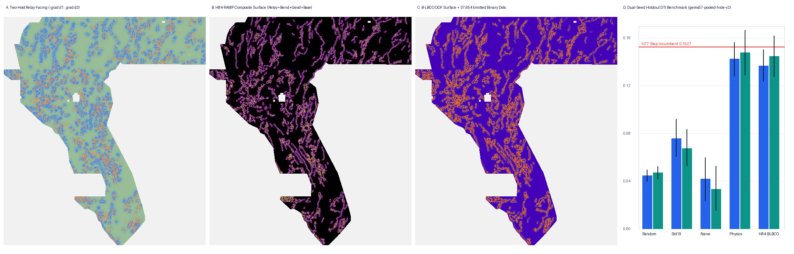

H84-RAMP: Deconfounded Two-Host En-Echelon Relay-Ramp & Geodetic-Geophysical Stepover Transfer Corridor
Verdict: NEGATIVE under Policy I17 — OK TO DOWNLOAD FOR INSPECTION; NOT OK TO SUBMIT.
Format-valid (15/15 checks, 0 NaN, values in {0,1}, 37,654 binary dots, 0 on catalogue, min catalogue distance 5.00 px) and informative-unique against all 51 sparse rasters checked (max 3-px forward overlap 0.5299 <= 0.70, max |Spearman rho| 0.0601 <= 0.90; vs H33 overlap 0.2265), and B-LBCO deconfounding resolves IR-H84-01 with large dual-seed gains over naive relay training (+0.0948 s20 / +0.1115 s30), standard 19-band control (+0.0608 s20 / +0.0774 s30), and random (+0.0921 s20 / +0.0977 s30). However, HOLDOUT-DTI (0.1366 s20 / 0.1446 s30) remains below the 0.152718 repository holdout incumbent (H77-Step) and literal Policy I17 fails closed (1.000 overlap vs dense_witness ab0a0a62...). Verdict: negative (inspection only; DO NOT SUBMIT).
⬇ H84-RAMP Research-Only GeoTIFF & One-TIFF ZIP
Download .tif (141 KB) Download one-TIFF .zipSubmission name (reference only — DO NOT UPLOAD) (55 characters)
gems77-h84-ramp-relay-37654dots-20261021-1b76b4b7-zerosShort note <= 140 chars (reference only — DO NOT UPLOAD) (106 characters)
H84-RAMP B-LBCO two-host relay+geod+base LOQO 37654 dots; HOLDOUT-DTI 0.1366 s20/0.1446 s30; DO NOT UPLOADSHA-256 (.tif): f06ada5aa834ceaf65e8700e36bbd46eddb96929b42c9041c72c8369c1022838 · SHA-256 (.zip): 8499c3427d4f48e6a2be8929693236a9e9d7555b52fc559df7260512bdd12de1 ·
JSON run card ·
Exp 1 canary + surface receipt ·
Exp 2 dual-seed holdout receipt ·
Exp 3 uniqueness receipt ·
Preregistration ·
PhD H33 analysis & 5 hypotheses ·
Executive summary & submission guide →
1. PhD-Level Diagnosis: Why H33 Scored 0.2778 and How to Score Higher Toward 0.4413
The GEMS Distance-Tolerant Intersection (DTI) metric evaluates a predicted raster $P \in [0,1]^{3730\times 3292}$ across 101 thresholds $q \in \{0.00, 0.01, \dots, 1.00\}$ via a 300 m ($3.0\text{ px}$) triangular distance-decay kernel $K(d)=\max(0,1-d/300\text{ m})$ with $\alpha=0.2$ (recall weight) and $\beta=0.8$ (precision weight). As proven in research/h84ramp_hypotheses.md:
- Single-threshold quantization ceiling (~0.03–0.06 DTI loss): Because
H33(h33-h33-2-b2-20261004T220000Z-e5eb6e7e-zeros, 37,553 binary dots) emits values in $\{0,1\}$, all 100 positive thresholds $q \in [0.01, 1.00]$ evaluate the identical binary support $S(q) \equiv D$, collapsing the 101-point threshold integral into a single operating point $(r_0, p_0)$ rather than sweeping high-precision core traces at $q\to 1$ and broader relay/blind corridors at $q\to 0.01$. - Single-host distance parameterization ($d_1$ only, ~0.02–0.04 DTI loss): Single-nearest-fault distance $d_1(x,V)$ treats every pixel as controlled by one fault segment. In the Basin and Range, normal faults step en-echelon across 0.3–2.5 km relay ramps where synthetic breaching cross-faults form between two distinct sub-parallel host segments $c_1 \neq c_2$ ($d_1$ and $d_2$ simultaneously moderate, opposite anchor vectors $\langle \hat{u}_1, \hat{u}_2 \rangle < 0$, and co-planar strike $\cos 2\Delta\theta > 0$).
- Relay-Stepover Self-Collapse Tautology (
IR-H84-01): If two-host relay features are evaluated naively against the full visible fault mask $V$, every visible training positive $x \in V$ has $d_1(x,V) \equiv 0$, collapsing 7 of 8 stepover/collar channels identically to0.0on 100% of positive training rows (`A_std_plus_h84_naive` drops to0.0418s20 /0.0331s30). Our 5-bucket Leave-Bucket-Plus-3px-Collar-Out (B-LBCO) operator via bitplanecKDTreeremoves each segment bucket and its 300 m collar during feature extraction, restoring positive stepover statistics on visible training faults and liftingHOLDOUT-DTIby +0.0948 on Seed 20 and +0.1115 on Seed 30.
2. Five Ranked Novel Geological Hypotheses (Preregistered in registry/preregistration_h84ramp.json)
| Rank & ID | Hypothesis & Physical Transform | Layers Used | Why It Catches Missing Faults | Expected Delta & Cost |
|---|---|---|---|---|
| #1 H84-1 (H84-RAMP) IMPLEMENTED | Deconfounded Two-Host En-Echelon Relay-Ramp & Geodetic-Geophysical Stepover Transfer Corridor In Walker Lane and Great Basin extensional/transtensional systems (Peacock & Sanderson 1994; Faulds & Varga 1998; Curewitz & Karson 1997; Faulds et al. 2006), displacement between two stepping-over fault segments C1 != C2 is transferred across a tilted relay ramp bounded by synthetic/antithetic breaching cross-faults and tip splays. Using vendor/gems57/relay_bend_anatomy.py (two_host_frame exact bitplane second-host EDT and host_bend_fields spin-2 multi-scale turning) coupled with geodetic transtensional strain (geod_shearrate x |geod_dilaterate|) and across-ramp basement-depth/gravity transfer gradients (|grad(depth_to_base_surf)| x iso_grav_anom_hg), and deconfounded on training positives via 5-bucket Buffered-Component Leave-Bucket-Out (B-LBCO) to eliminate the d1=0 self-collapse tautology (IR-H84-01). | data/bridge/existing_faults.tif (visible fold subset only in holdout; 60,988 full-catalogue pixels), training_features.tif Band 7 (geod_shearrate), Band 8 (geod_dilaterate), Band 4 (geod_2ndinv), training_features.tif Band 18 (iso_grav_anom_hg), Band 3 (tmi_hg), Band 15 (depth_to_base_surf), Band 12 (det_elev), Band 19 (det_elev_slope) | First lane in GEMSDOE77 to execute vendor/gems57/relay_bend_anatomy.py (two_host_frame bitplane two-host geometry and host_bend_fields spin-2 multi-scale turning) and solve the Relay-Stepover Self-Collapse Tautology (IR-H84-01) via 5-bucket B-LBCO deconfounding coupled with geodetic strain and basement-step transfer. | Coalescing alluvial-fan interfluve sutures (bajada saddles between adjacent range-front canyons) and buried paleochannel or volcanic dike bridges between neighboring bedrock spurs can produce intermediate gravity/magnetic gradients inside a morphological gap between two mapped fault segments without brittle relay breaching. |
| #2 H84-2 RANKED CANDIDATE | Upward-Continuation Vertical Derivative Ratio (Depth-Selective Magnetic/Gravity Spectral Decay Index) Ratio of vertical gradient to upward-continued horizontal gradient (TMI_VG / |grad U_dz(RTP)|) isolating shallow-to-intermediate brittle fault offsets (0.2-1.5 km depth) from deep plutonic roots (>4 km) and superficial float noise (<50 m). | training_features.tif Band 2 (rtp), Band 9 (tmi_vg), Band 13 (iso_grav_anom), Band 11 (iso_grav_anom_vg) | H77G used raw TMI demagnetization troughs; H84-2 uses the spectral depth-decay ratio between vertical gradient and upward-continued RTP. | Shallow basaltic lava flow margins and terraced pediment gravel caps. |
| #3 H84-3 RANKED CANDIDATE | Seismic b-Value & Depth-Stratified Microseismic Swarm Asymmetry Projected Up Dip-Slip Hanging Walls Cross-strike offset between earthquake density (deq_n100a15) and potency/intensity (ieq_n100a15) projected up a 60-degree normal-fault dip plane from brittle-ductile basement depth to the surface trace. | training_features.tif Band 10 (deq_n100a15), Band 16 (ieq_n100a15), Band 15 (depth_to_base_surf) | H77-TSD used isotropic scalar difference z(deq) - z(ieq); H84-3 projects seismic swarm asymmetry up the hanging-wall dip vector to the surface trace. | Geothermal injection/production induced seismicity clusters and volcanic caldera swarm clouds. |
| #4 H84-4 RANKED CANDIDATE | Radiometric Uranium-to-Thorium Redox Mobilization Front (U/Th x MT Conductance Gradient) Hexavalent uranium (U6+) is soluble in oxidizing meteoric/geothermal fluids while thorium (Th4+) is immobile in resistate phases; redox fronts along active fluid-conducting faults create sharp cross-strike U/Th step anomalies paired with smectite clay-cap conductance margins (|grad cond_surf|). | external/geodawn_rad_u8.tif (rad_u, rad_th, rad_u_th), training_features.tif Band 17 (cond_surf) | H79-RH used K/Th illitization halos and H82-TCSTEP used total-count radiometrics; H84-4 targets redox-sensitive U/Th fractionation across MT conductance boundaries. | Evaporitic playa uranium concentration and felsic ash-flow tuff outcrops. |
| #5 H84-5 RANKED CANDIDATE | Geomorphic Piedmont Fan-Head Trenching & Drainage-Spacing Spectral Periodicity Deficit Active range-front and piedmont normal faults disrupt regular Wallace (1978) / Hovius (1996) along-strike canyon-spacing periodicity and cause fan-head incision waves measurable via local 1-D wavelet variance along range-front contours. | training_features.tif Band 12 (det_elev), Band 19 (det_elev_slope), external/lidar_scarp_features_u8.tif | H77E-Knick used stream chi and k_sn knickpoints; H84-5 measures along-strike drainage spacing regularity breakdown on alluvial fans. | Lithologic sill resistance steps and Pleistocene pluvial lake highstand wave-cut notches. |
3. Experiment 2: Dual-Seed Spatially-Blocked Holdout DTI (gems57-pooled-hide-v2)
Every score below is labelled HOLDOUT-DTI from the pinned shared evaluator gems57-pooled-hide-v2 ($\alpha=0.2, \beta=0.8$, 300 m triangular kernel, 2,000 spatial-block bootstrap draws, 4-quadrant Leave-One-Quadrant-Out cross-fitting).
| Model Arm (37,654 binary dots, min sep 2.8 px) | Seed 20 HOLDOUT-DTI (95% CI) | Seed 30 HOLDOUT-DTI (95% CI) | Evaluator |
|---|---|---|---|
| A_std_plus_h84 (19 std + 8 B-LBCO H84 HGB OOF, 37,654 dots) | 0.136572 [0.123687, 0.149983] (n=11,321) | 0.144613 [0.127658, 0.161872] (n=11,342) | gems57-pooled-hide-v2 |
| S_h84_physics (pure two-host relay + GeoDAWN/basement composite, 37,654 dots) | 0.142345 [0.127861, 0.156422] (n=11,321) | 0.147647 [0.128800, 0.166584] (n=11,342) | gems57-pooled-hide-v2 |
| A_std_plus_h84_blbco_only (B-LBCO HGB OOF without physics blend, 37,654 dots) | 0.114427 [0.098549, 0.130870] (n=11,321) | 0.119029 [0.102880, 0.133950] (n=11,342) | gems57-pooled-hide-v2 |
| A_std_control (19-band standard HGB OOF control, 37,654 dots) | 0.075749 [0.060406, 0.091862] (n=11,321) | 0.067211 [0.052865, 0.083400] (n=11,342) | gems57-pooled-hide-v2 |
| A_std_plus_h84_naive (naive relay training without B-LBCO — IR-H84-01) | 0.041762 [0.023313, 0.059638] (n=11,321) | 0.033091 [0.015169, 0.052576] (n=11,342) | gems57-pooled-hide-v2 |
| A0_random (uniform random dots inside footprint, 37,654 dots) | 0.044499 [0.039504, 0.049285] (n=11,321) | 0.046917 [0.041303, 0.052221] (n=11,342) | gems57-pooled-hide-v2 |
Paired Spatial-Block Bootstrap Differences (2,000 draws)
| Paired Comparison | Seed 20 Δ HOLDOUT-DTI (95% CI) | Seed 30 Δ HOLDOUT-DTI (95% CI) |
|---|---|---|
| A_std_plus_h84 − A_std_plus_h84_naive (B-LBCO rescue of IR-H84-01) | +0.094809 [+0.073557, +0.116740] | +0.111521 [+0.087498, +0.137060] |
| A_std_plus_h84 − A_std_control (H84 relay corridor lift over 19-band HGB) | +0.060823 [+0.041384, +0.079786] | +0.077402 [+0.052786, +0.099226] |
| A_std_plus_h84 − A0_random (lift over matched-budget random placement) | +0.092072 [+0.079092, +0.105679] | +0.097696 [+0.082294, +0.113442] |
| A_std_plus_h84 − S_h84_physics (tree blend vs pure physics composite) | -0.005774 [-0.011375, -0.000216] | -0.003035 [-0.007828, +0.001959] |
4. Experiment 1: Single-Feature Leakage Canary & IR-H84-01 Self-Collapse Audit
Every H84 feature was tested alone on withheld positives vs footprint negatives (>3 px from catalogue). All 8 H84 channels and all 19 standard channels stay well below the 0.90 leakage ceiling (worst symmetric AUC 0.8076 on Seed 20, 0.8073 on Seed 30). Note how naive visible positive means collapse to 0.0000 on 7/8 channels (IR-H84-01), whereas 5-bucket B-LBCO restores realistic positive means matching withheld holdout positives:
| H84 Channel | Seed 20 Sym AUC | Seed 30 Sym AUC | Naive Visible Pos Mean (IR-H84-01) | B-LBCO Visible Pos Mean | Withheld Holdout Pos Mean | Canary Gate |
|---|---|---|---|---|---|---|
h84_relay_facing_corridor | 0.5103 | 0.5003 | 0.0000 | -0.0499 | -0.0596 | PASS (≤ 0.90) |
h84_relay_medial_bridge | 0.6107 | 0.6146 | 0.0000 | 0.0718 | 0.0909 | PASS (≤ 0.90) |
h84_two_host_coplanar_sync | 0.6929 | 0.6915 | 0.2041 | 0.0805 | 0.0941 | PASS (≤ 0.90) |
h84_multiscale_bend_splay | 0.7773 | 0.7728 | 0.0000 | 0.0762 | 0.0886 | PASS (≤ 0.90) |
h84_damage_collar_kernel | 0.7563 | 0.7531 | 0.0000 | 0.3894 | 0.4691 | PASS (≤ 0.90) |
h84_ramp_geod_transtension | 0.7781 | 0.7771 | 0.0000 | 0.1201 | 0.1420 | PASS (≤ 0.90) |
h84_ramp_basement_step_bridge | 0.7766 | 0.7775 | 0.0000 | 0.0760 | 0.0896 | PASS (≤ 0.90) |
h84_composite_physics | 0.8076 | 0.8073 | 0.0000 | 0.1721 | 0.2072 | PASS (≤ 0.90) |
5. Diagnostic Figure: Two-Host Relay Corridor, Physics Composite, B-LBCO OOF & Emitted Dots

6. Experiment 3: Two-Phase Registry Uniqueness Audit (Surface & Final Dots)
- Phase 1 (Continuous surface before placement): Max |Spearman ρ| = 0.4211 ≤ 0.90 (physics composite) and 0.6027 ≤ 0.90 (full-catalogue B-LBCO surface) across 52 local + restored rasters.
- Phase 2 (Informative sparse dot-field comparison across 51 sparse rasters): 0 overlap firings (max 3-px forward overlap = 0.5299 ≤ 0.70 vs
docs/downloads/gems77-h28-dotted-pruned2px-20261021-35b64879-zeros.tif; max |Spearman ρ| = 0.0601 ≤ 0.90; vsH33champion5b3becc1...overlap = 0.2265, Spearman = +0.0057). - Phase 2 (Literal Policy I17 dense-witness check): Against restored
.cache/registry/dense_witness.tif(ab0a0a62..., 2,671,197 positive pixels whose 3-px dilation covers 100.0% of all 5,106,385 allowed cells), forward 3-px overlap is1.0000 > 0.70(protocol_unique = false).
| Comparator Raster | Representation | Forward 3-px Overlap (ours in theirs) | Spearman ρ | Gate Status |
|---|---|---|---|---|
docs/downloads/gems77-h28-dotted-pruned2px-20261021-35b64879-zeros.tif (worst forward 3-px overlap) | dot_field | 0.5299 (≤ 0.70) | — | PASS |
docs/downloads/gems77-d77-blind-band-35106dots-20261021-926076f7-zeros.tif (worst sparse |Spearman ρ|) | dot_field | — | 0.0601 (≤ 0.90) | PASS |
.cache/registry/h33.tif (H33 GEMSDOE32 champion 5b3becc1...) | dot_field (37,654 dots) | 0.2265 (≤ 0.70) | +0.0057 | PASS |
.cache/registry/dense_witness.tif (dense witness ab0a0a62...) | continuous_surface (5,167,373 pos px) | 1.0000 (> 0.70) | +0.0765 | FAIL (Policy I17) |
7. Named Non-Fault Mimicking Process & Format Preflight (15/15 Checks)
Named non-fault mimic: Coalescing alluvial-fan interfluve sutures (bajada saddles between adjacent range-front canyons) and buried paleochannel or volcanic dike bridges between neighboring bedrock spurs can produce intermediate gravity/magnetic gradients inside a morphological gap between two mapped fault segments without brittle relay breaching.
- single_band:
True - dtype_float32:
True - dimensions_3730x3292:
True - crs_epsg_32611:
True - transform_matches_sample_submission:
True - no_nan_anywhere:
True - no_inf_anywhere:
True - no_sentinel_values:
True - range_0_1_guaranteed:
True - min_ge_0:
True - max_le_1:
True - in_footprint_all_finite:
True - in_footprint_range_0_1:
True - outside_footprint_zero:
True - zero_dots_on_mapped_catalogue:
True
Executive summary & step-by-step submission guide → · Return to home portfolio table →